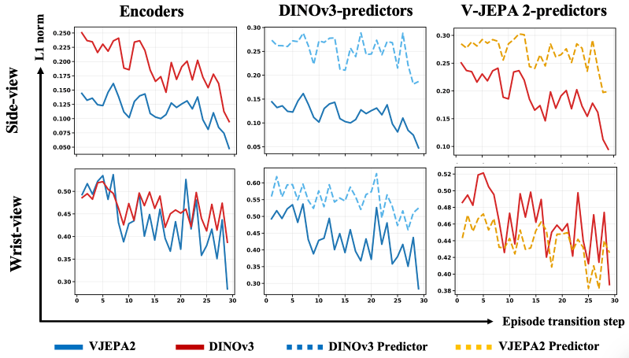
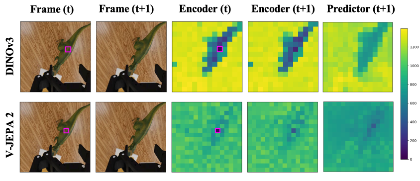

Architecture and Training of DUET-DINO

Action-conditioned latent world models predict future visual representations, enabling zero-shot goal-conditioned robot planning and control. However, their predictions for fine-grained spatial and rotational actions are unreliable for full 7-DoF end-effector control. To address this gap, we introduce DUET-DINO, a simultaneous cross-view latent world model that jointly learns action-conditioned predictions from static side- and wrist-camera observations through cross-view conditioning. By exploiting complementary global scene and gripper-centric information, DUET-DINO enables latent planning over the full 7-DoF action space. Across spatially diverse reach, orientation-intensive angled-reach, and multi-goal grasp-and-lift tasks, DUET-DINO consistently outperforms single-view and independent dual-view baselines, achieving 92% success on reach, 72.5% on angled-reach, and 60.0% on lift tasks. DUET-DINO is trained from scratch on DROID and RoboArena datasets and generalizes robustly under visual distribution shifts. We further show that while V-JEPA 2 wrist-view predictions underestimate visual dynamics induced by fine-grained actions, DINOv3 predictions better capture action-conditioned scene changes, leading to stronger downstream planning.

Reach. Goal-conditioned reaching toward the coffee pot.
Angled reach. Coordinated translation and end-effector rotation toward the drill.
Grasp and lift. Angled approach, grasp, and lift of the ketchup bottle.
Visual shifts. DUET-DINO plans with changed backgrounds and additional tabletop distractors.
Hardware. The same latent-planning approach running on the physical robot.

DINOv3 predictions follow the temporal pattern of the observed latent changes, while V-JEPA 2 wrist-view predictions underestimate changes caused by fine-grained actions.

Patch-distance maps show that DINOv3 preserves more spatially coherent correspondences around the manipulated object in its predicted next-frame representation.